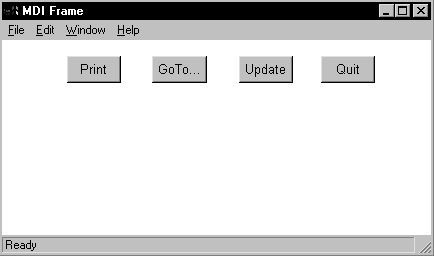

PowerBuilder sizes the client area in a standard MDI frame window automatically and displays open sheets unclipped within the client area. It also sizes the client area automatically if you have defined a toolbar based on menu items, as described in the preceding section.
However, in a custom MDI frame window—where the client area contains controls in addition to open sheets—PowerBuilder does not size the client area; you must size it. If you do not size the client area, the sheets open but may not be visible and are clipped if they exceed the size of the client area.
If you plan to use an MDI toolbar with a custom MDI frame, make sure the controls you place in the frame's client area are far enough away from the client area's borders so that the toolbar does not obscure them when displayed.
 Scrollbars display when a sheet is clipped If you selected HScrollBar and VScrollBar when defining the
window, the scrollbars display when a sheet is clipped. This means
not all the information in the sheet is displayed. The user can
then scroll to display the information.
Scrollbars display when a sheet is clipped If you selected HScrollBar and VScrollBar when defining the
window, the scrollbars display when a sheet is clipped. This means
not all the information in the sheet is displayed. The user can
then scroll to display the information.
When you create a custom MDI frame window, PowerBuilder creates a control named MDI_1 to identify the client area of the frame. If you have enabled AutoScript, MDI_1 displays in the list of objects in the AutoScript pop-up window when you create a script for the frame.
 To size or resize the client area when the frame
is opened or resized:
To size or resize the client area when the frame
is opened or resized:
Write a script for the frame's Open or Resize event that:
For example, the following script sizes the client area for the frame w_genapp_frame. The frame has a series of buttons running across the frame just below the menu, and MicroHelp at the bottom:

int li_width, li_height
//Get the width and height of the frame's workspace.
//
//Note that if the frame displays any MDI toolbars,
//those toolbars take away from the size of the
//workspace as returned by the WorkSpaceWidth and
//WorkSpaceHeight functions. Later, you see how to
//to adjust for this.
//
li_width = w_genapp_frame.WorkSpaceWidth()
li_height = w_genapp_frame.WorkSpaceHeight()
//Next, determine the desired height of the client
//area by doing the following:
//
// 1) Subtract from the WorkSpaceHeight value: the
// height of your control and the Y coordinate of
// the control (which is the distance between the
// top of the frame's workspace -- as if no
// toolbars were there -- and the top of your
// control).
//
// 2) Then subtract: the height of the frame's
// MicroHelp bar (if present)
//
// 3) Then add back: the height of any toolbars that
// are displayed (to adjust for the fact that the
// original WorkSpaceHeight value we started with
// is off by this amount). The total toolbar
// height is equal to the Y coordinate returned
// by the WorkspaceY function.
li_height = li_height - (cb_print.y + cb_print.height)
li_height = li_height - MDI_1.MicroHelpHeight
li_height = li_height + WorkspaceY()
//Now, move the client area to begin just below your
//control in the workspace.
mdi_1.Move (WorkspaceX (), cb_print.y + &
cb_print.height)
//Finally, resize the client area based on the width
//and height you calculated earlier.
mdi_1.Resize (li_width, li_height)
 About MicroHelpHeight MicroHelpHeight is a property of MDI_1 that
PowerBuilder sets when you select a window type for your MDI window.
If you select MDI Frame, there is no MicroHelp and MicroHelpHeight
is 0; if you select MDI Frame with MicroHelp, MicroHelpHeight is
the height of the MicroHelp.
About MicroHelpHeight MicroHelpHeight is a property of MDI_1 that
PowerBuilder sets when you select a window type for your MDI window.
If you select MDI Frame, there is no MicroHelp and MicroHelpHeight
is 0; if you select MDI Frame with MicroHelp, MicroHelpHeight is
the height of the MicroHelp.